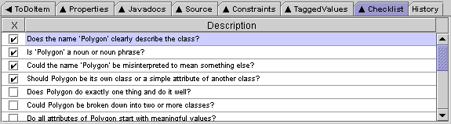

Argo's Checklist Tab lists questions for you to consider while making design decisions. Some of these questions are specific, while others are more open-ended. They are similiar to the kinds of checklists that many software developers use in design review meetings. Using checklists in Argo may help you resolve some design issues earlier, thus reducing the cost of rework and making actual design review meetings more effective.
The questions are specific to the type of design element that is selected. Before you consider your design to be complete, you should look at the checklist for each part of the design to see if you missed anything. You may click in the left column to add a checkmark to any item that you feel satisfied with.